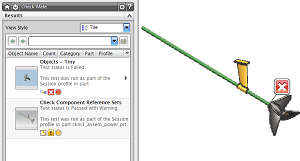
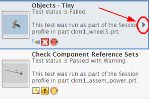
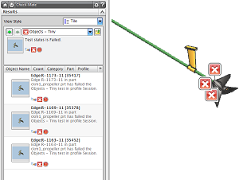
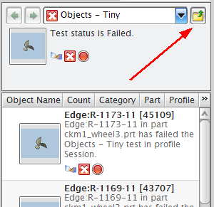

查看测试对象 — 微小的的结果
-
在 Check-Mate HD3D 工具中设置下列选项值。
在此组中
设置这些值
结果
视图样式 = 平铺
控制
结果源 = 最近运行
设置

过滤级别 = 测试
您对这个装配运行了三个测试，所有的部件都通过了检查几何体面 — 锐刺/切口测试，所以该项测试的结果从结果显示中全部被滤出，将报告其它两个测试的失败结果。

-
在对象 — 微小的平铺视图中，双击从属项符号 以显示测试对象 — 微小的的结果。

当您双击对象 — 微小的时，从属的测试结果将显示在下方的面板中，并且在图形窗口中显示相应的标签。

-
点击向上 以返回至测试视图。
